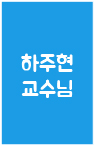
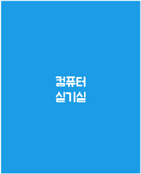

601
4학년 강의에 사용하는 컴퓨터 실기실입니다. 컴퓨터 전체가 맥으로 설치돼있어 강의시간 외에는 사용할 수 없습니다.
602
주로 컴퓨터그래픽 기초, 모션그래픽 수업 때 사용합니다. 야간에도 학생들이 자유롭게 사용할 수 있는 컴퓨터실입니다.

603
하주현 교수님 연구실입니다.
605
이경석 교수님 연구실입니다.
606
홍승표 교수님 연구실입니다.
607
이상선 교수님 연구실입니다.
608
황인화 교수님 연구실입니다.
609
이경선 교수님 연구실 입니다.
610
유혁상 교수님 연구실 입니다.
611
디자인학과 과사무실 입니다. 조교님과 근로학생들이 오전 9시부터 오후 6시까지 근무하고 있습니다. 점심시간은 12:30~1:30입니다.

611
과 사무실과 연결된 프린트실입니다. 인쇄 및 스캐너 이용이 가능하며 학과 카페에 프린트 신청을 하면 이용이 가능합니다.
613
조형과 구조 수업이 진행되는 강의실입니다.
614
컴퓨터 전체가 맥으로 설치되어있는 실기실입니다. 강의시간에 이용할 수 있으며 개인적으로는 사용이 어려운 실기실입니다.
615
목조, 공예 등을 작업하는 학생들이 사용하는 교구 개발실입니다. 학과 카페에 공지글을 숙지하고 예약 후에 이용할 수 있습니다. 레이저 커팅기와 CNC는 교육을 받은 학생만 이용할 수 있습니다.
616
드로잉 실기실로 사용되는 강의실입니다.

617
디지털 컨텐츠 학생들의 수업이 진행되는 컴퓨터 실기실입니다. 강의시간 외에는 개인적으로 사용이 어렵습니다.
618
학회 학생들이 이용하는 공간입니다. 교내 및 학과 행사들에 대한 회의와 준비가 이뤄지는 곳입니다.
619
학생들에게 '포폴실'로 불리는 곳입니다. 학생들이 자유롭게 쉬다 갈 수 있는 곳이며 팀 과제가 있는 경우 다 같이 모여서 과제를 하기도 합니다.